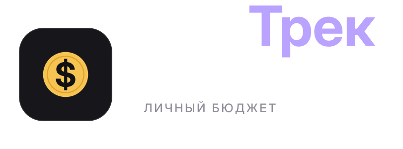
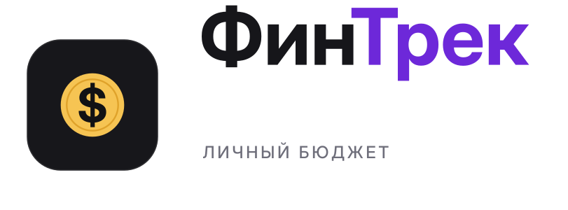
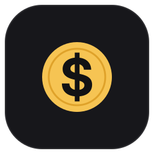
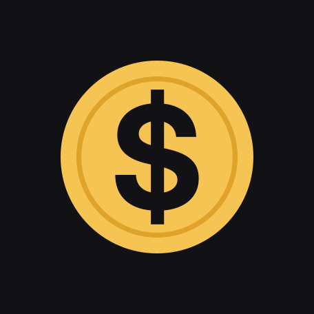

ФинТрек · айдентика
Тёмная matte-подложка, золотая монета и знак доллара — деньги и бюджет без лишних деталей. Фиолетовый остался в словесном знаке и свечении приложения.



Знак
Палитра: тёмный #121214 / #17171B, золото #F6C453 / #DFA22A, акцент #B9A3FF.
Золотая монета — деньги; знак доллара — валюта; тёмная подложка — характер приложения.